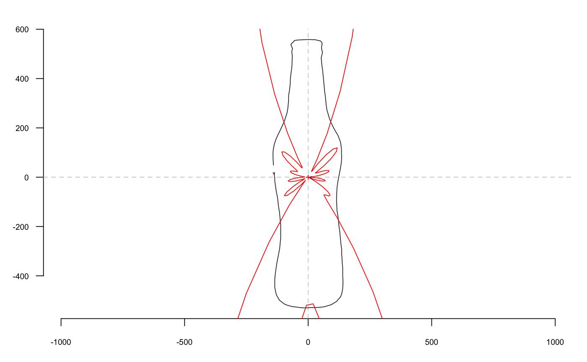

rfourier computes radii variation Fourier analysis from a matrix or a
list of coordinates where points are equally spaced radii.
rfourier(x, ...) # S3 method for default rfourier(x, nb.h, smooth.it = 0, norm = FALSE, ...) # S3 method for Out rfourier(x, nb.h = 40, smooth.it = 0, norm = TRUE, thres = pi/90, ...) # S3 method for list rfourier(x, ...)
| x | A |
|---|---|
| ... | useless here |
| nb.h |
|
| smooth.it |
|
| norm |
|
| thres |
|
A list with following components:
an vector of \(a_{1->n}\) harmonic coefficients
bn vector of \(b_{1->n}\) harmonic coefficients
ao ao harmonic coefficient.
r vector of radii lengths.
see the JSS paper for the maths behind. The methods for Out objects
tests if coordinates have equally spaced radii using is_equallyspacedradii. A
message is printed if this is not the case.
Silent message and progress bars (if any) with options("verbose"=FALSE).
Directly borrowed for Claude (2008), and called fourier1 there.
Claude, J. (2008) Morphometrics with R, Use R! series, Springer 316 pp.
Other rfourier: rfourier_i,
rfourier_shape
data(bot) coo <- coo_center(bot[1]) # centering is almost mandatory for rfourier family coo_plot(coo)rf <- rfourier(coo, 12) rf#> $an #> [1] 1.041357e-14 -4.745309e+02 8.327818e-01 2.719483e+02 -1.430955e+01 #> [6] -1.110619e+02 2.489911e+01 -1.011701e+00 -1.771458e+01 5.542552e+01 #> [11] 6.786737e-01 -5.902187e+01 #> #> $bn #> [1] 9.497073e-14 -1.108663e+01 -5.032796e+01 1.187178e+01 1.332257e+02 #> [6] 4.068663e+00 -1.709325e+02 -1.013725e+01 1.391797e+02 1.085760e+01 #> [11] -7.449979e+01 -2.355442e+00 #> #> $ao #> [1] 669.1267 #> #> $r #> [1] 139.1167 135.1134 135.8741 136.8427 141.0323 143.5802 151.2095 162.8116 #> [9] 175.5101 182.5204 198.0176 214.4721 223.4262 241.8735 260.7074 269.7883 #> [17] 289.8301 310.0117 320.9760 342.0111 363.0862 373.1664 393.9569 415.7375 #> [25] 436.2997 445.8192 465.8759 484.9159 494.7304 512.1917 523.5711 525.7951 #> [33] 528.7641 528.6261 529.8403 529.9849 528.9630 529.2840 529.5332 529.6230 #> [41] 526.6029 525.3373 516.8135 501.5361 492.0222 473.0432 453.3357 442.8940 #> [49] 422.7064 402.9506 393.5883 373.2914 353.4743 342.9622 323.7894 303.5315 #> [57] 283.8734 274.5648 254.3851 234.8608 225.9056 207.4851 188.9917 179.2651 #> [65] 163.2102 148.4020 142.2876 131.8906 124.2115 121.7441 122.3408 126.4329 #> [73] 133.8555 138.8126 149.4057 160.3977 165.1035 178.0327 190.2983 196.3891 #> [81] 207.9233 218.2629 225.0539 239.8685 256.5975 274.7171 283.4915 303.0400 #> [89] 323.0170 333.5460 353.5262 373.8148 383.4986 404.8965 425.3750 435.1409 #> [97] 455.5781 476.1955 487.0166 508.4428 526.8989 546.1072 554.4755 557.9344 #> [105] 558.1869 558.1342 557.6074 557.8729 556.8590 542.6716 524.9317 515.3814 #> [113] 494.2988 473.6200 462.7267 442.2440 421.9866 401.6471 390.8306 370.6053 #> [121] 350.7010 341.4100 321.0176 301.2409 290.9421 272.0980 254.7364 246.6077 #> [129] 230.9259 217.6545 212.0765 201.6712 191.0722 180.1960 174.3784 163.0992 #> [137] 152.9502 148.4252 #># Out method bot %>% rfourier()#>#>#>#> An OutCoe object [ radii variation (equally spaced radii) analysis ] #> -------------------- #> - $coe: 40 outlines described, 60 harmonics #> # A tibble: 40 x 2 #> type fake #> <fct> <fct> #> 1 whisky a #> 2 whisky a #> 3 whisky a #> 4 whisky a #> 5 whisky a #> 6 whisky a #> # ... with 34 more rows